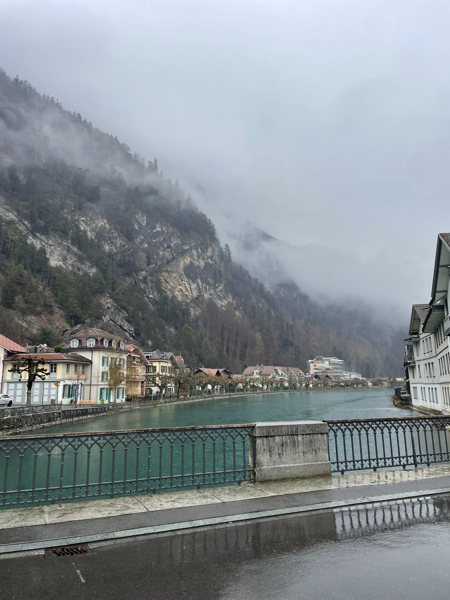
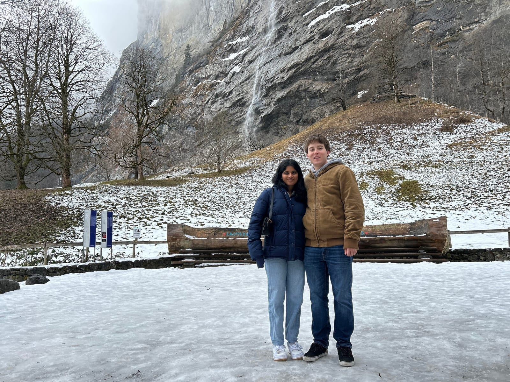
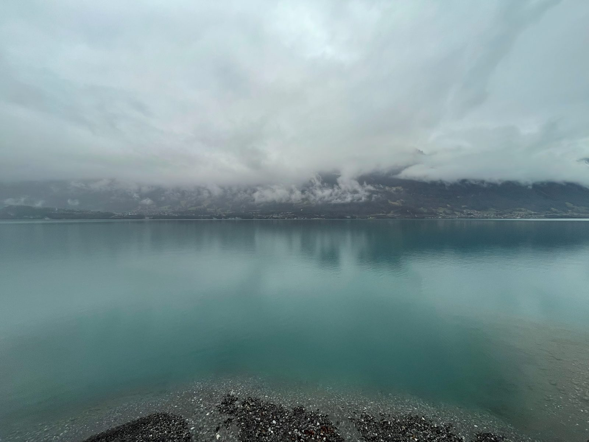
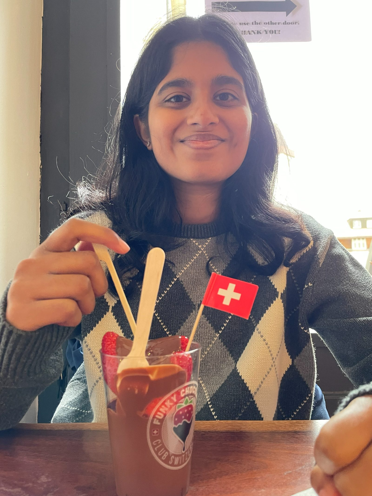

SWITZERLAND
Thursday
- Got on the overnight train at 9:03 pm
- Regular seats with a guy right across from us, didn't sleep amazing
Friday
- Got in to Basel at like 7:30 and switched trains
- Made it to Interlaken at 9:30
- Went to a bakery for breakfast and waited for Airbnb to let us drop off luggage

- They let us check in at 11:00
- Train to Lauterbrunnen for the Staubach falls at 11:30

- Spent a couple hours just wandering and seeing the falls, river, and cows
- Went back home and ate, showered, and rested
- Took a bus to Lake Brienz and walked for 15-20 min before getting the bus back for dinner

- Ate at Welcome India King
- Good shahi paneer and chole bahtura
- Went to the store for wine and snacks
- Planned the next day and watched some Interstellar
Saturday
- Slept in and took the 10:37 am train to Grindelwald
- Walked to a viewpoint
-
1 / 2
- Steep hills
- Walked with a cat for a while and saw another otw back
- Kept finding spots for good pictures around town
- Took a train back after a couple hours to Interlaken
- Went to a cheese shop and Funky Chocolate Club

- Went home and showered, figured out dinner
- Migros was closing and the store food wasn't great and it was expensive
- We chose McDonald's and it was actually rly good
- Chicken/veggie paprika sandwiches
- Tried to go to a good bar but it was closed
- Everything else was expensive so we grabbed drinks at the store and went home to plan and watch tv
Sunday
- Got up and packed up the Airbnb at 8:15
- Left the paragliding base at 9:45 to go up the mountain
-
1 / 4
- Paragliding was awesome
- I slid on the ground before liftoff but it was all good we made it just fine
- Me and my guide floated longer than everyone else along the north side of Interlaken and south face of the mountains
- Done with this quickly and back to our luggage for snacks by 11
- Bus to St Beatus Caves at 11:30
-
1 / 2
- Caves were awesome, underrated
- McDonald's again because everything is so expensive
- Walked around and sat at Lake Brienz for a bit
- Bussed back across town to sit at Lake Thun for sunset
-
1 / 3
- Someone took very nice pictures for us
- Bus back to Airbnb for our luggage and walk to train station
- 7:04 train to Basel and then to Leipzig then Berlin at 6:30 am Monday